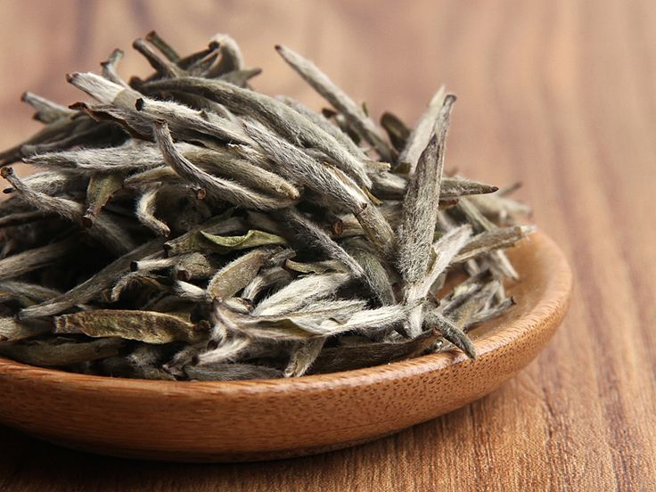
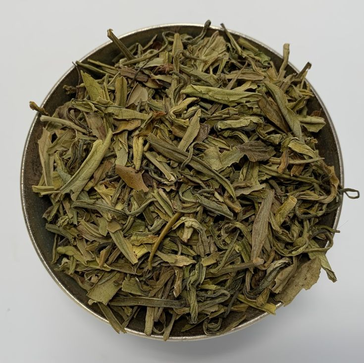
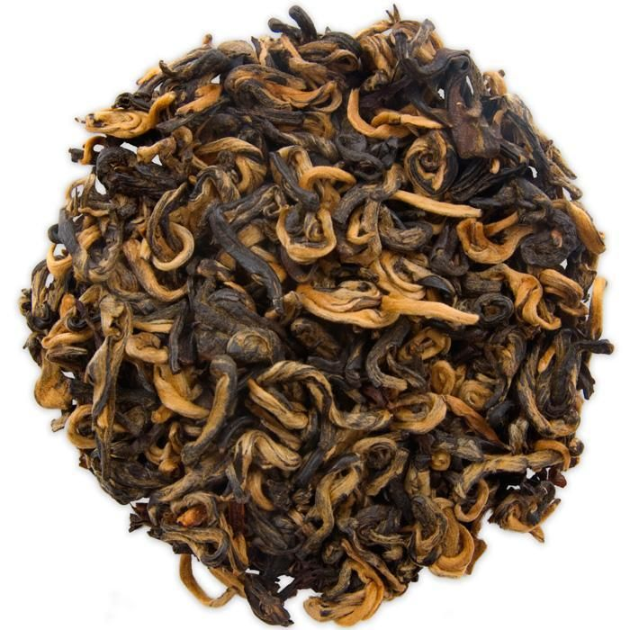
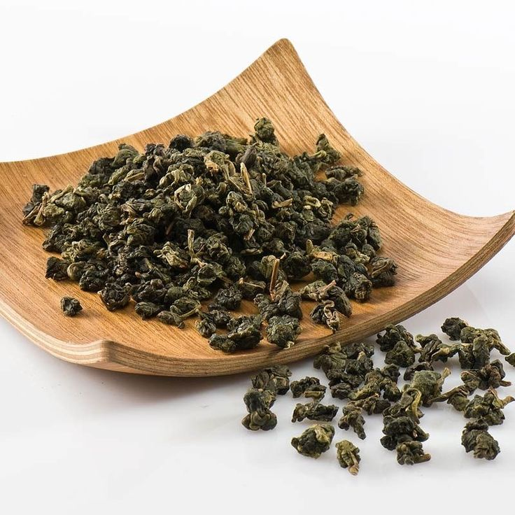
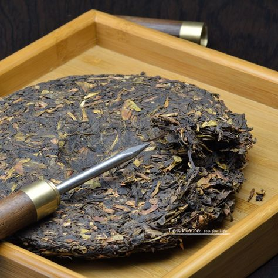
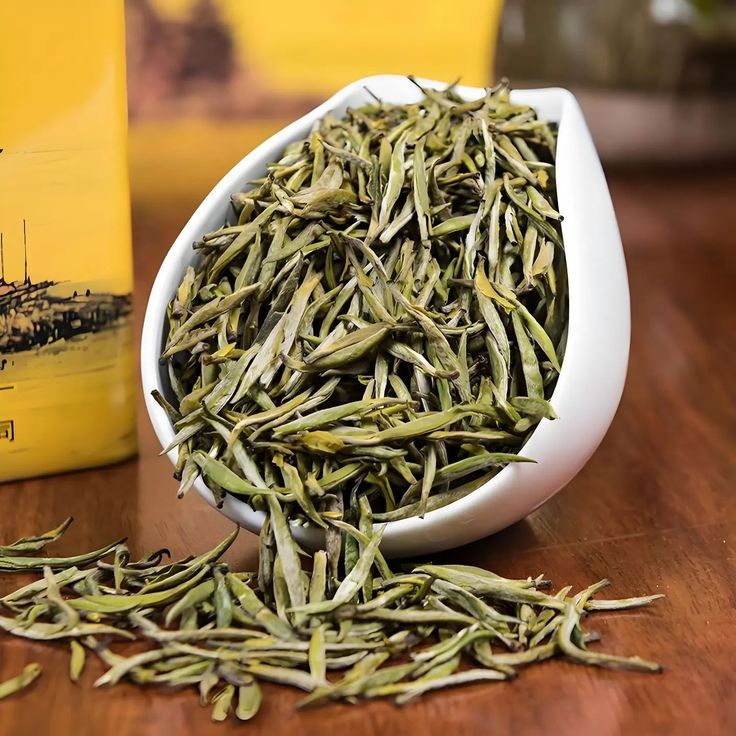

Сорта китайского чая
Погрузитесь в мир ароматов и вкусов, откройте для себя богатство традиций и уникальные свойства каждого сорта.

Белый чай
Нежнейший чай из юных почек. Лёгкий, чистый и освежающий.

Зелёный чай
Освежающий, с лёгкой горчинкой. Бодрит и дарит энергию.

Чёрный чай
Крепкий, насыщенный. Идеален к завтраку или обеду.

Улун
Полуферментированный чай с фруктовыми нотками.

Пуэр
Зрелый и глубокий вкус, чай с выдержкой и характером.

Жёлтый чай
Редкий, бархатистый и сбалансированный чайный вкус.
Хотите узнать больше?
Откройте для себя удивительные традиции китайского чаепития и философию чайных ритуалов.